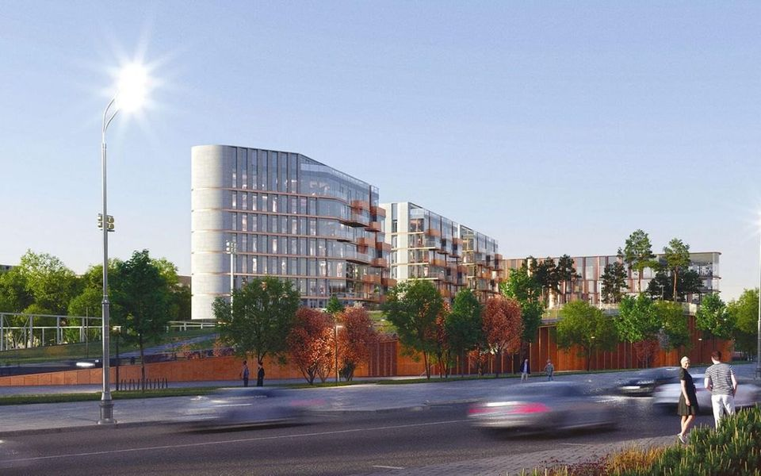

Дома / Дом Спорта
Элит · Пресненский район
Дом Спорта Capital Group
· старт продаж, срок — I кв. 2029 · продаёт застройщик

На заметку:
Квартал Сергея Скуратова на месте стадиона «Красная Пресня»: 92 квартиры, 10 этажей, ключи — в I квартале 2029 года. Машиномест 290 — больше трёх на квартиру. У Capital Group на ЦИАН 12 лотов: однокомнатные от 110,4 млн, медиана 2,80 млн за метр. Два минуса паспорта: четыре квартиры на этаже — для элиты много — и застройщик.
Паспорт дома
Девять проверок,
закрыто 9 из 9
Паспорт собираем по открытым данным: проектная декларация, карты, рейтинг застройщика. «Проверяем» — значит, ответа с источником пока нет, и мы его не додумываем. «Нет» по проверке — это минус; сколько минусов выдерживает дом, зависит от класса. Красная линия — остановленные стройки у застройщика, продажа мимо эскроу или ТЭЦ, мусорный завод и полигон рядом: тогда отметки не будет.
| Проверка | Как у дома | Мерка класса | Ответ |
|---|---|---|---|
| 01Адрес и класс | Пресненский район23.09.2026 | элит — в ЦАО | да |
| 02Окружение | плюсы: вода 196 мOpenStreetMap (bbbike 22.09.2026 + Overpass): ТЭЦ, МСЗ, полигоны отходов, промзоны от 2 га, магистрали; парки от 1 га и вода — 500 м · 23.09.2026 | ТЭЦ, мусорный завод и полигон не ближе 150 м (иначе красная линия), промзона и магистраль тоже | да |
| 03Повседневность | школ с отметкой в получасе пешком нетOpenStreetMap, пешеходный граф (Дейкстра, 4,5 км/ч): метро, МЦК, МЦД, ж/д; marshruty.csv, shkoly.csv · 23.09.2026 | метро, МЦК или МЦД до 15 минут пешком | да |
| 04Плотность | 92 квартирыкаталоги, декларации, сайты застройщиков (база NOTA) · 24.09.2026 | до 100 квартир, на этаже до 3 | нет |
| 05Машина | 290 мест на 92 квартиры — 3,15каталоги, декларации, сайты застройщиков (база NOTA) · 24.09.2026 | от 2,0 места на квартиру | да |
| 06Застройщиккрасная линия | Capital GroupЕРЗ.РФ https://erzrf.ru/zastroyschiki/brand/capital-group-430410001 · ЕИСЖС наш.дом.рф: каталог новостроек, реестр застройщиков, реестр проблемных объектов · ЕФРСБ bankrot.fedresurs.ru · 23.09.2026 | без остановленных строек и банкротств (иначе красная линия), рейтинг ЕРЗ.РФ от 3 из 5 | нет |
| 07Сроки дома | ввод: I кв. 2029 ⟶ I кв. 2029 (без переноса) · готовность по графику декларации 20% · строится 2 из 2 корпусов (показан корпус с наибольшим сдвигом)https://наш.дом.рф/сервисы/каталог-новостроек/объект/69376 (+ ещё 1 объект: 69374) · 23.09.2026 | перенос срока не больше полугода | да |
| 08Юридикакрасная линия | квартиры · эскроу есть (Сбербанк) · разрешение на строительство действует до 26.02.2029 · участок: арендаhttps://наш.дом.рф/сервисы/каталог-новостроек/объект/69376 (+ ещё 1 объект: 69374) · 23.09.2026 | продажа через эскроу, документы в порядке (иначе красная линия) | да |
| 09Цена против класса | от 2 281 650 ₽/м²каталоги, декларации, сайты застройщиков (база 23.09) · 23.09.2026 | не дороже медианы класса в районе больше чем на 30% | да |
Ещё восемь проверок — архитектура, квартиры, двор, воздух, содержание, соседи, что построят рядом и ликвидность — делаем, когда дом попадает в вашу подборку. Как устроены все 17 — в методе.
Школы рядом
Ближайшая школа — Школа № 340, 21 мин пешком. Ближайшая из нашей базы школ — Романовская школа, 22 мин. Школ с отметкой NOTA в получасе пешком нет.
Пешком по улицам и дворам, 4,5 км/ч, до ближайшего корпуса школы. Все школы вокруг дома — на карте «До школы пешком», сильные школы города — в рейтинге школ.
Что в продаже
Квартиры
по комнатности
В продаже 61 лот, самый доступный — 46,2 м² за 110 млн ₽.
| Тип | Лотов | Площадь, м² | Цена, млн ₽ |
|---|---|---|---|
| 1 комната | 4 | 45,8–56,3 | 110–164например, 46,2 м² за 110 млн ₽, 2 этаж |
| 2 комнаты | 2 | 62,8–73,8 | 143–204 |
| 3 комнаты | 4 | 97,5–115,3 | 290–310 |
| 4+ комнаты | 3 | 124,4–158,7 | 347–398 |
Источник: novostroy-m.ru · сверка 22.09.2026. Цены — со скидкой застройщика, если он её показывает. Лоты уходят каждую неделю: актуальный набор и планировки пришлём.
Что проверить на месте
Вопросы
для просмотра
- Какие спортивные объекты будут работать для жильцов и кто их содержит
- Что в договоре на случай переноса ключей с I квартала 2029 года
- Какие квартиры смотрят на футбольное поле и что с шумом в дни матчей
Источники
- novostroev.ru
- novostroev.ru/articles
- novostroev.ru
- novostroy-m.ru
- наш.дом.рф
- 24.09.2026;
- 24.09.2026
- dvizhenie.ru
Данные базы NOTA на 23 сентября 2026. Если застройщик раскроет новые цифры, итог пересчитаем.